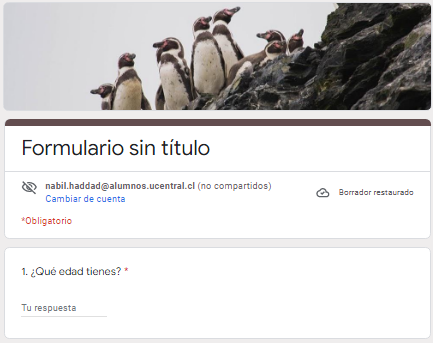

Debido a la ODS que escogimos investigar; decidimos que una manera de profundizar en ella era averiguar qué
tan contingente era la temática o el objetivo para los mismos habitantes de nuestro sector, al fin y al cabo
somos una región portuaria. Para llevar a cabo esto fue necesario desarrollar un formulario en la plataforma
de google que nos permitiría difundirla y naturalmente registrar información acerca del conocimiento de la
población sobre el tema.
Dentro de las preguntas que pusimos en el formulario de google podemos encontrar;
Cada una de estas preguntas fue formulada en función de poder hacer relaciones entre ellas y así obtener
una conclusión mas contundente y coherente con nuestra investigación.
Si desea responder la encuesta haga click en la imagen
